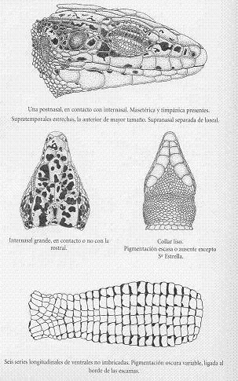

|
| Lagartija
Serrana |
Lacerta
monticola |
| Orden:
Squamata, familia: lacertidae |
 Identificación
Identificación |
Lagartija
de escamas dorsales algo mayores que las de los
costados, aplastadas o algo abombadas, lisas o
algo aquilladas. En la cola alternan anillos anchos
y estrechos más o menos conspicuos |
 |
Adulto |
Lagartija
robusta, de cabeza generalmente aplastada y hasta
8 cm. de longitud cabeza-cuerpo. Collar de borde
liso. Escamas dorsales granulares, aquilladas
o no, y dispuestas en número de 41 a 62,
en una línea transversal en el centro del
cuerpo. Escamas ventrales ordenadas habitualmente
en seis filas longitudinales y de 20 a 33 transversales.
Dorso verde o pardo de tonalidad muh variable,
generalmente cubierto de manchas negras de contornos
irregulares y con mayor densidad en los costados.
En general no existe solución de contunuidad
entre dorso y costados. La zona ventral suele
tener tintes blancuzcos, azulados, verdosos o
amarillentos con pequeños puntos negros
en todas, algunas o ninguna escama ventral. dependiendo
de la población geográfica considerada. |
| Dimorfismo
sexual |
En
algunas poblaciones los machos son, al nacer,
de menor tamaño corporal que las hembras.
En general, los machos adultos son mayores y de
cabeza más robusta que las hembras, aunque
las diferencias son sólo ligeras en algunas
zonas. |
| Descripción
del juvenil |
Los
recien nacidos tienen una longitud cabeza-cuerpo
comprendida por lo general entre 22 y 30 mm. y
una longitud total de 52 a 70 mm. El diseño
de los juveniles es similar al de los adultos,
aunque suelen poseer un neto contraste entre los
costados, más oscuros que el dorso, y la
cola , que generalmente es de vivos tonos azulados
o verdosos. |
|
|
Distribución |
|
|
Endemismo
ibérico presente en la cordillera Cantábrica,
norte de Galicia, sierra de la Estrella (Portugal)
y sierras de Francia, Béjar, Gredos y Guadarrama.
En el sistema Central su límite oriental
se sitúa en el macizo de Peñalara,
de modo que no llega más alla del puerto
de Somosierra, y se halla ausente de la sierra
de Ayllón. Es probable su presencia al
oeste de la sierra de Francia; en cualquier caso,
se desconoce la amplitud de la separación
entre la población portuguesa de la sierra
de la Estrella y la de la sierra de Francia, aunque
al menos una parte de la sierra de Gata no posee,
aparentemente, altitud y condiciones adecuadas
para la lagartija serrana. |
| Variaciones
geográficas |
Dependiendo
de los autores, se establecen varias subespecies.
Nosotros definiremos las que describen A. Salvador
y J.M. Pleguezuelos, en su libro "Reptiles
españoles". |
Las
poblaciones de Asturias, León, Zamora y
Galicia (L.m. cantabrica) son bastante homogéneas
y poseen menor tamaño (hasta 75 mm. de
cabeza y cuerpo). Anillos alternantes de la cola
bien visibles. Escama rostral separada, en contacto
en un punto o en amplio contacto con la internasal.
Los machos presentan el dorso verdoso y las hembras
pardo grisáceo. Los machos poseen uno o
dos ocelos axilares azulados o azul verdoso. Partes
inferiores verdo amarillentas. |
Las
poblaciones del Sistema Central tienen mayor talla
(hasta 91 mm. de longitud de cabeza y cuerpo).
En las poblaciones de la Sierra de la Estrella
(L. m. monticola), el dorso es verde o verde amarillento,
con el centro pardo rojizo. Poseen el vientre
verde o verde amarillento muy mancahdo de negro.
En las poblaciones de las sierras de Guaderrama
(L.m. cyreni), Gredos y Béjar (L.m.
castiliana), y de la Sierra de
Francia (L.m. martinezricai) la diferenciación
entre ellas es escasa. La coloaración es
verde azuladaen el dorso y verde gris claro o
verde azul claro en el vientre. La pigmentación
oscura ventral es menor. |
Según
alugunos autores esta especie debería incluirse
en los géneros Archaeolacerta o Iberolacerta |
|
|
Habitat |
Como
su nombre vernáculo indica, la lagartija serrana
es una especie propia de zonas montañosas que
suele ocupar áreas rocosas y pastizales de media
y alta montaña. También se halla presente
en zonas de matorral montano, aunque en prácticamente
toda el área de distribución ocupa preferentemente
zonas rocosas. En el sistema Central y la cordillera
Cantábrica ocupa un amplio rango altitudinal,
desde los 1.400 m. hasta más de 2.500 m. de altitud.
Sin embargo, en Galicia so conocen poblaciones incluso
al nivel del mar. |
|
Biología |
Puede
estar activa durante todo en año en las oonas
de menor altitud de Galicia, mientras que en alta montaña
restringe su actividad a unos pocos meses, desde el
comienzo de la primavera hasta mediados del otoño.
En los individuos activos se han registrado temperaturas
corporales entre los 20 y los 37,5º C. |
La
madurez sexual suele alcanzarse al año o a los
dos años de vida. Los apareamientos tienen lugar
desde comienzos de marzo hasta junio. La puesta consta
de tres a diez huevos de 10-16 mm. por 6-9,5 mm. de
anchura, y se verifica en julio o agosto. Al menos en
la cordillera Cantábrica puede haber dos puesta
anuales. La incubación se prolonga durante mes
y medio a casi dos meses, de modo que los primeros recién
nacidos pueden observarse ya a finales de agosto y hasta
finales de septiembre. |
La
densidad de población es muy variable y va desde
los 50 individuos por hectárea en zonas de la
cordillera Cantábrica hasta más de 1.500
ejemplares en áreas de alta montaña de
la sierra de la Estrella. En gredos, los machos son
territoriales y abarcan, en el interior de su dominio
vital, a varias hembras adultas. |
Su
dieta incluye tanto presas voladoras (moscas y mosquitos)
como terrestres (hormigas, arañas y escarabajos). |
La
culebra lisa europea es quizá su principal enemigo
natural en amplias áreas del sistema Central.
También se conocen casos de depredación
por parte de víboras hocicudas, así como
un ataque en cautividad de un lagargo verdinegro a una
lagartija serrana. |
Estado de la población y amenazas |
Las
poblaciones de media y alta montaña se consideran
vulnerables como consecuencia de su restringida extensión
y de la presión humana a que son sometidas durante
el período estival. También se ha señalado
que la construcción de estaciones de invierno
puede contribuir de forma significativa a la destrucción
del hábitat propio de la lagartija serrana en
zonas de alta montaña. |
|
Enlaces |
| Webs |
|
| Fotos |
|
|
|
Ejemplares
fotografiados en nuestra sierra |
|
|
|
|
|